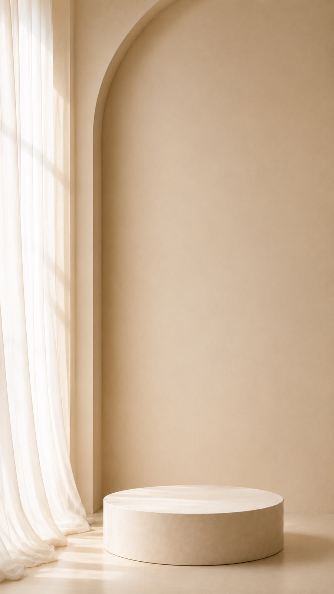
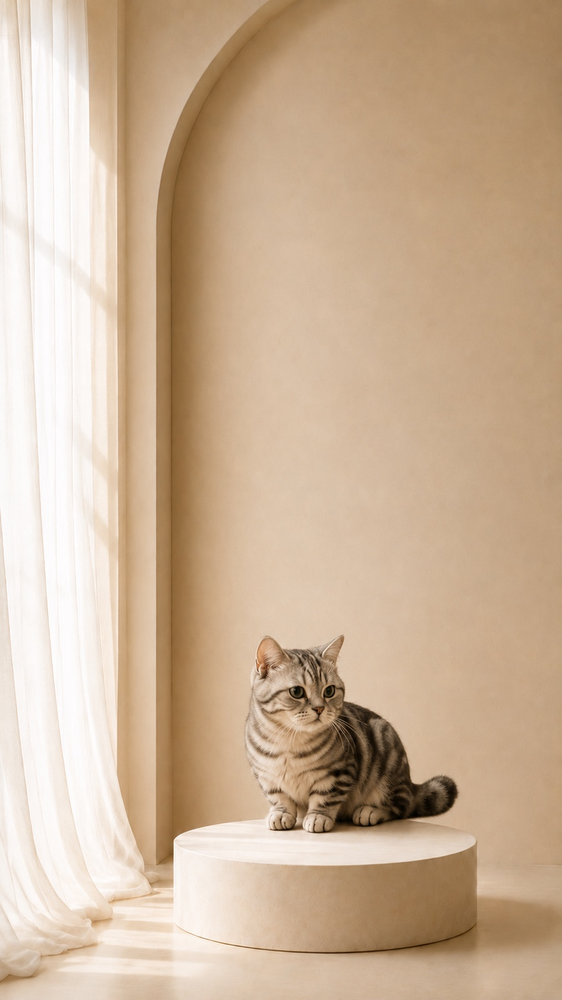
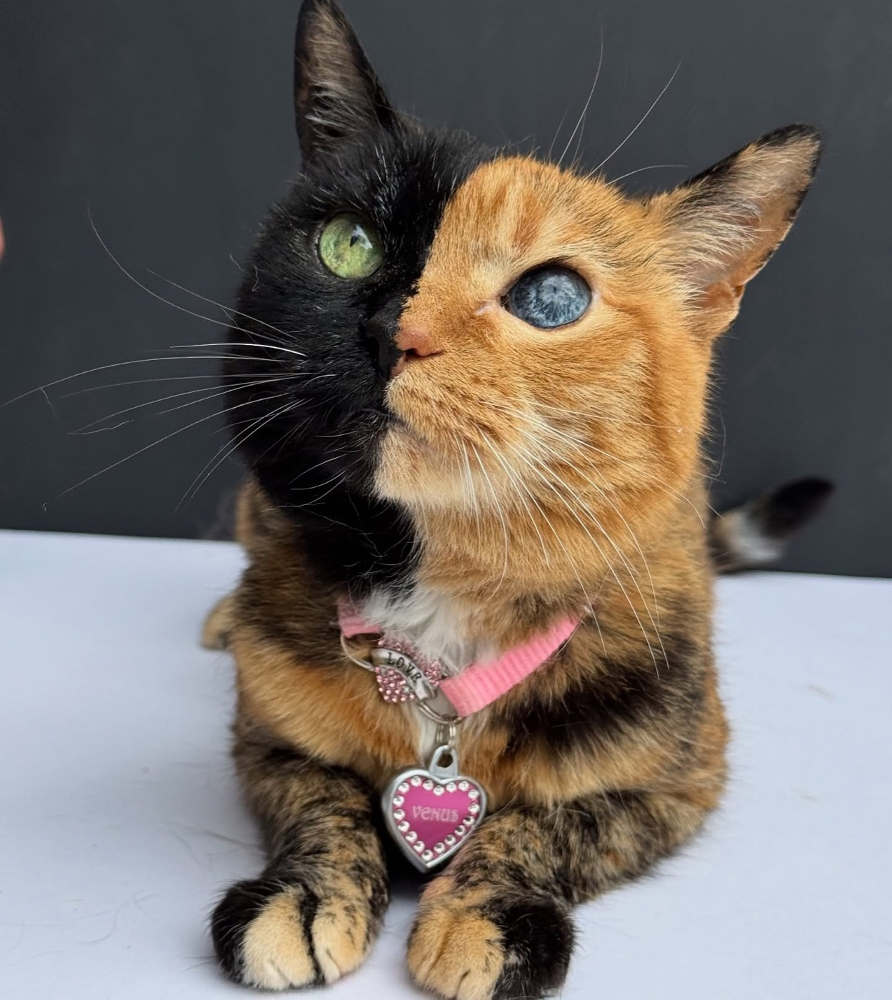
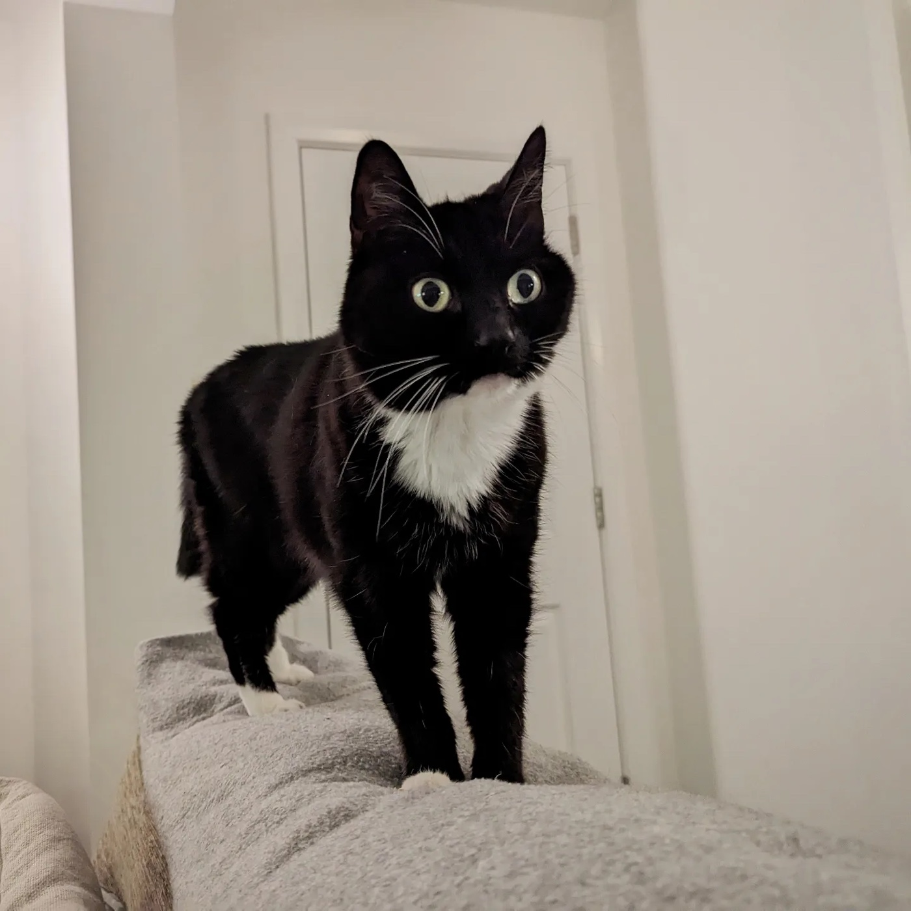
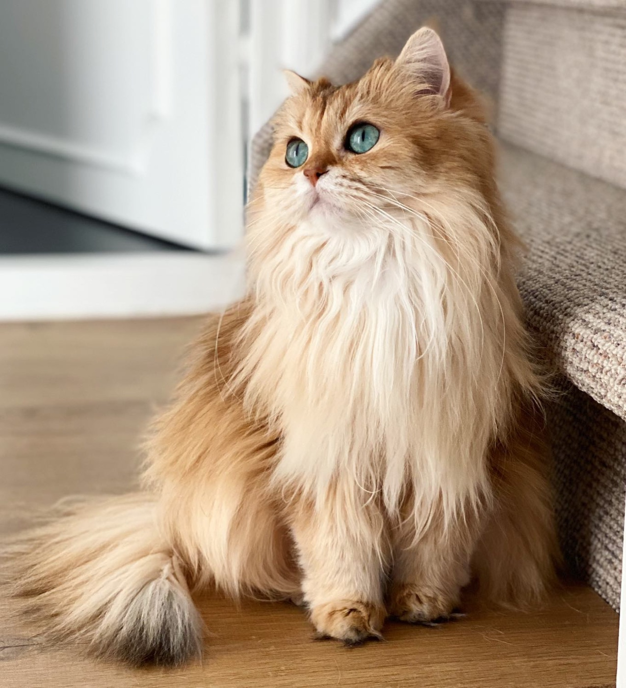

01
Locked background
원본 배경. 구도·빛·받침대·상단 여백 변경 금지.
A2 PET IDENTITY / PROMPT EVALUATION
15개 고정 입력을 2시간 간격으로 세 번 생성한다. 매 회차 가장 큰 실패 원인 하나만 프롬프트에 반영해, 개선인지 우연인지 비교한다.
LIVE SCOREBOARD
가중치 100점 · Identity 35 · Markings 15 · Face 15 · Anatomy 10 · Background 10 · Integration 10 · Reproducibility 5
FIXED INPUT CONTRACT
Image 1과 2는 전 회차 공통. Image 3만 각 샘플의 사용자 사진으로 교체한다.

원본 배경. 구도·빛·받침대·상단 여백 변경 금지.

고양이의 위치·스케일·접지·조명만 참고. 정체성은 폐기.



얼굴·눈·귀·털·무늬·체형을 결정하는 유일한 입력.
CONTROLLED ITERATION
회차마다 실패 빈도가 가장 높은 원인 하나만 수정한다.
FINAL DECISION
PROMPT-ONLY · HOLD외부 Identity Capsule은 Round 1 대비 Identity를 +4.0점 높이고 Hard Fail을 3건에서 2건으로 줄였다. 그러나 Nala 두 입력은 여전히 공간 참고 고양이의 얼굴 골격을 따라갔고, 배경은 45/45 모두 다시 그려져 941×1672로 출력됐다.
사용자 사진에서 얼굴·눈·무늬·체형을 한 줄 구조로 추출해 생성 조건으로 사용.
공간 참고 고양이를 빼고 투명 배경의 고양이 자산만 생성해 정체성 간섭 제거.
원본 1080×1920 배경에 좌표·스케일·그림자를 코드로 합성해 픽셀 잠금 보장.
15 FIXED SAMPLES
INTERPRETATION
배경이 비슷해 보여도 원본 1080×1920과 픽셀·해상도가 달라지면 엄격한 Background Lock은 실패다. Identity가 25/35 미만이거나 다중 동물·심각한 해부 오류·텍스트가 생기면 총점과 관계없이 Hard Fail로 처리한다.
Generator: Codex built-in ImageGen · quality: auto · public posting authorized by owner on 2026-08-24 KST